Notre histoire
À Taznakht, le tissage se transmet de mère en fille. En 2008, un groupe d’artisanes choisit de réunir ses métiers à tisser et ses expériences : la Coopérative Atlas voit le jour. Leur ambition est simple : préserver leurs motifs, partager leurs outils et mieux faire connaître leur travail.
Aujourd’hui, 24 artisanes participent à la vie de l’atelier. De la préparation de la laine aux dernières finitions, chaque tapis naît d’un travail collectif. Les formes et les couleurs s’inspirent des paysages du Haut Atlas, des souvenirs de famille et des envies de celles qui les tissent.
Au cœur de l’atelier
Les mains, les matières et les gestes qui donnent vie à nos tapis.
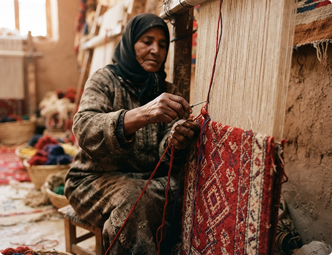
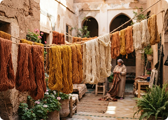
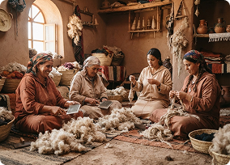
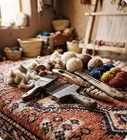
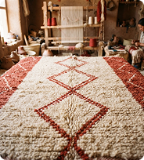
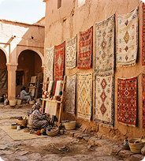
De la laine brute au tapis fini : un aperçu de la vie à la Coopérative Atlas.
Fait main à Taznakht
Des pièces singulières pour votre intérieur. Dimensions et motifs peuvent varier selon les créations.
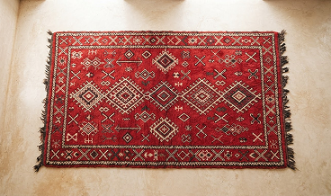
Tapis Taznakht
Laine de mouton · 160 × 240 cm
2 400 MAD
Prix Indicatif
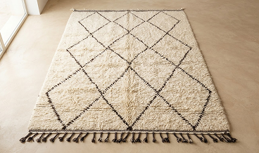
Tapis des montagnes
Laine naturelle · 140 × 200 cm
1 800 MAD
Prix Indicatif
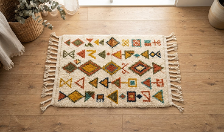
Petit tapis Azilal
Laine & coton · 80 × 150 cm
950 MAD
Prix Indicatif
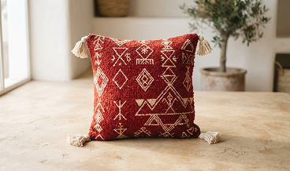
Coussin Tifawin
Laine tissée · 45 × 45 cm
280 MAD
Prix Indicatif
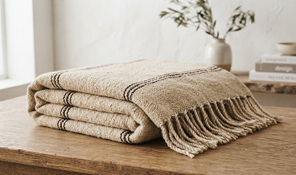
Plaid de l’Atlas
Laine naturelle · 130 × 180 cm
650 MAD
Prix Indicatif
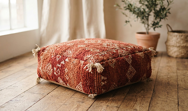
Pouf Abrid
Laine tissée · 50 × 50 × 35 cm
720 MAD
Prix Indicatif
Pour connaître les disponibilités ou imaginer une pièce sur mesure, échangez directement avec l’atelier.